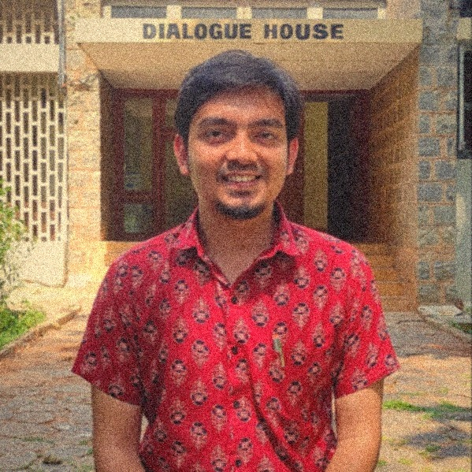

Writer · Producer · Facilitator
Stories from India's public classrooms, all the way to Cannes.
Why did I get this opportunity? मुझे यह अवसर क्यों मिला?
Five roles behind one red carpet.
Cannes didn't come from a single campaign. It came from years of work in five capacities — each one below links straight into the archive.
June 2026 · Cannes, France
A red-carpet moment to remember.
मेरे लिए एक यादगार रेड कार्पेट पल
Not the film festival — its sibling. Cannes Lions is the world's festival of advertising, creativity and branding, and I was there with the Equity, Representation & Accessibility (ERA) cohort.
What I did at Cannes
मैंने कान्स में क्या किया?
Forum stages, screenings and workshops — a week of watching how the world's best work gets made, and bringing a grassroots Bihar story into that room.
A lot of new friends
कई सारे नए दोस्त
Work in this sector? Here's how you can get there
Apply in October – November.
अगर आप भी इस क्षेत्र में काम करते हैं, तो कान्स कैसे पहुँच सकते हैं?
Notes from France फ्रांस के कुछ अनोखे अनुभव
What a democracy looks like on the street.
Fifteen days, four cities, mostly on foot. What stayed with me were the small civic rules that quietly shape daily life — the same questions of liberty, equality and fraternity I take into workshops back home.
The archive · 2020 — 2026
Every piece, in the order it happened.
Nine kinds of work, each with the capacity I worked in. Pick a category to see its roles — every card opens the original.

About
From Sainik School Nalanda to social-impact storytelling.
Experience
Education
Recognition
Achievements & fellowships.
Liberté. Égalité. Fraternité.
Let's build the next story.
Open to communications leadership roles, fundraising storytelling and constitutional-literacy collaborations.